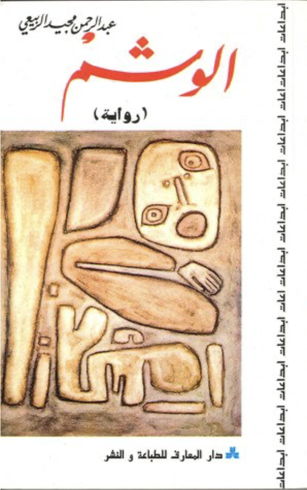

The cover of the fifth edition of al-washm or The Tattoo* by Abdel Rahman al-Rubaie, published by dar al-maaraf (1996)
This is part of the #100ArabNovels project, where I try to revisit the Arab Writers'Association's list of 100 most significant novels, as part of trying to understand the Arab imaginary post-2011
There is a scene in Abdel Rahman Majeed al-Rubaie (b. 1939)'s novella (first published in 1972), where the protagonist, Kareem al-Nasiri, yanks his lover's hair and bangs her head repeatedly on her desk, while screaming, 'are my feelings a joke to you, you whore'. The scene can serve as the archetypical of nearly all the Arabic modern literature written between the late 1960s all through 1980s. The 'literature of defeat', novels, novellas, short stories, memoirs, essays that were written about the experience of living in post-1967 War with Israel and the resounding defeat of all the Arab forces and the subsequent coup d'etats that ravaged many Arab countries in its aftermath, including Iraq and Syria. It is a wretched response, by men who were acutely disillusioned by the post-independence and Arab Nationalism promise of one unified, progressive Arab homeland. Its style and tone can vary between the raucous, furious or the introspective and erratic (think Haidar Haidar's al-Zaman al-Muhish or The Desolate Time, 1973) but its unified in its extremely indulgent protagonists, almost solipsistic and shocking misogyny. With scenes like the one mentioned, where bouts of violence against women and even rape occur followed by or preceded by bouts of crushing anguish and misery.
The fact that the women themselves in the novels do nothing about such violence, and that the men completely reconciled with it, is beyond disturbing, of course. To us now, it seems unthinkable that men could inflict so much physical and mental violence on women and women would do nothing to resist or even object and the men would never question or hesitate before such outrageous displays of violence and disrespect to women, their bodies and their lives. It tells us a lot as well about our present predicament. Arab societies have been normalizing violence against women in the everyday life and resistance to call out such violence and point out that there is something fundamentally wrong with the way Arab societies deal with women is only beginning to change since 2011.
al-Rubaie's psychologically bruised protagonist tells his story through a series of shifting interior monologues, dialogues and conversations, charting out his beginning as an aspirant youth from the poor and marginalized south of Iraq, dreaming of change and opportunity and then getting arrested (most likely during the turbulent years of the rise of the Ba'ath party after the 1963 coup d'etat), and then released after agonizing prison trauma and eventually leaving Iraq altogether.
The author was hailed for his literary achievement, perhaps because of his revolutionary experiment with form. Although the novella is divided into sections, or chapters, the text itself flows in one long series of dialogues and monologues between the protagonist, Kareem and the remaining cast of characters without transitions or breaks. There is no real topographical marks or punctuation to mark when one conversation or interior monologue ends and one another begins, which might remind the reader of an earlier similar experiment, Virginia Woolf's, The Waves (1931). Woolf's experiment in melding poetry with lyrical writing, combining one consciousness experience, refracted via six main characters, was a breakthrough when it was published. al-Rubaie's novella, doesn't have Woolf's lyricism nor narrative complexity, but it does something similar in unifying the effect of that nightmarish experience, the experience of defeat, state violence and imprisonment. It is a great risk to undertake as a writer, as the reader can start to lose grasp of events and characters, but to his credit al-Rubaie manages to sail through more 120 pages with little or no bumps.
The novella itself alternates between the protagonist, Kareem, recollection of his imprisonment experience in the wake of his release and his attempts to overcome his political despair and disappointment through two distinct romantic possibilities, while recollecting and reminiscing about a prior failed romance. Again a theme and a thematic that runs through most of modern Arab literature. Women are always seen as substitutes to political engagement and politics. Specifically after failed politics.
The conditions inside the prison, the persecution of people involved in politics and the choices people make to reconcile themselves with their traumas and oppression of the state (in the case of Iraq, like the case of many other Arab countries, its usually military dictatorship), is unfortunately very timely and still relevant today. Arab regimes, are still operating on principles of annihilating politics altogether, where the state is defined only in a ceremonial redistributive role without any real meaning of the political. In the context of Iraq and the aspirations of impoverished peasants in the south trying to eke out a living and claim their right to a life of dignity, that drives the conflict with the state and eventual imprisonment of the protagonist.
Kareem's, the protagonist, decision to go to Kuwait in the end to try and make a living, also echoes the choices millions made in the late 1960s and 1970s throughout the Arab world in working in the GCC countries and the GCC countries absorbing a significant surplus in labour force of the entire region as populations increased ten folds than before WWII and their economies almost collapsed due to the failure of so-called state-driven economic model (i.e. nationalization of the economy, introducing central planning,...etc). The decision is not just pragmatic, like the protagonist himself says in the novella, 'its an escape'.
al-Washm, is a literary experiment to reveal the lasting effect of trauma, political and personal trauma and although al-Rubaie breaks a new ground in form (a form very much mirrored by the structure of a mind at the edge of its own limits), it doesn't break from the typical post-revolutionary melancholy characterizing other literary works of the time. By instrumentalizing women as substitute for the political, by denying politics and the possibility of change, al-Rubaie offers little for us to cherish or hold on to, beyond his own rage, despair and escapism.
*The novel remains untranslated to English